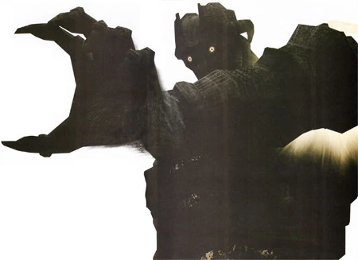

Malus es el decimosexto y último coloso. Se encuentra encima de una gran meseta en el extremo sur de La Tierra Prohibida (Cuadrante F8). A diferencia de los otros 15 Colosos , Malus se encuentra tras unas grandes puertas que no se abrirán hasta que los 15 Colosos anteriores no sean derrotados.

Malus en PS2/PS3